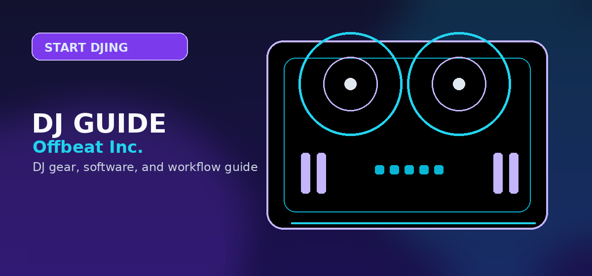

DJ Equipment for Beginners 2026: What You Actually Need
The honest beginner DJ equipment list: controller, headphones, speakers, laptop. With real prices, what actually matters, and what you can safely skip in 2026.

Disclosure: This page uses affiliate links. We may earn a commission at no extra cost to you. Full disclosure →
Most 'beginner DJ equipment' lists recommend things you don't need yet. This guide focuses on the minimum required to practice effectively and play a house party. We list items by priority, with current prices.
Beginner DJ Equipment Priority List
| Priority | Item | Budget Pick | Price | Skip If... |
|---|---|---|---|---|
| 1 (Essential) | DJ Controller | Numark Party Mix II | $99 | — |
| 2 (Essential) | DJ Software | Serato DJ Lite | Free | — |
| 3 (Essential) | Closed-back headphones | Sony MDR-7506 | $99 | Studio monitor headphones ≥ $80 |
| 4 (Recommended) | Laptop stand | Rain Design mStand | $42 | Already have monitor at eye level |
| 5 (Optional) | Powered speakers | Yamaha HS5 | $399/pair | Headphone mixing only |
| 6 (Skip) | Vinyl turntables | — | $400+ | Learning digital first |
What You Need (And What You Don't)
You need: A controller, software, and headphones. That's it for the first 6 months. The Numark Party Mix II ($99) + Serato DJ Lite (free) + Sony MDR-7506 ($99) = $198 total. This setup handles bedroom practice and a house party.
You don't need yet: Turntables (learn digital first), a mixer (your controller has one built-in), PA speakers (headphone mix for first 6 months), or a dedicated audio interface (your controller has one built-in).
Why Headphones Before Speakers
DJ headphones are priority 3 because you need to cue (pre-listen) the next track before mixing it in. Your controller routes the cue signal to the headphone output only. Without headphones, you cannot hear the incoming track — you can only mix by eye (watching the waveform), which breaks down in a live environment.
When to Add Speakers
Add powered speakers when: (1) practicing live performance, (2) playing a small venue, or (3) you need to hear how your mix sounds in a room. The Yamaha HS5 ($399/pair) are the standard entry-level studio monitors. For party PA use, a powered speaker like the JBL EON715 ($449 single) covers a 200-person room.
Shop on Amazon
Start your DJ journey — beginner controllers and starter kits on Amazon.
Also on zZounds
Flexible financing · No credit check · 45-day price guarantee.
Full Comparison Table
Use this reference table to compare all the options covered in this guide at a glance:
| Consideration | Entry-Level Options | Mid-Range Options | Professional Options |
|---|---|---|---|
| Typical price range | Under $150 | $150 — $400 | $400+ |
| Best for | Absolute beginners; casual use | Serious hobbyists; semi-pro | Working professionals; touring DJs |
| Build quality | Plastic chassis, standard jogs | Metal components, improved jogs | Club-grade construction |
| Software included | Lite versions only | Full versions included | Full + pro features activated |
| Resale value | Low | Moderate | High (holds value well) |
For most beginners reading this guide, the mid-range tier represents the best value. Entry-level gear is often outgrown within 6 months, while professional gear has capabilities that may go unused for years. Put the savings toward music, lessons, or a better audio interface instead.
What to Buy First vs What to Wait On
- Buy first: Controller + headphones — these are the core tools where quality directly affects the learning experience
- Can wait: Mixer upgrades, USB drives, custom cartridges — these matter more once you have core skills developed
- Rent before buying: PA speakers for mobile gigs — rental makes more sense than purchase until you have 10+ events booked
- Skip entirely (for most): Standalone media players (CDJs) — software-based workflow is professional-grade and significantly cheaper
Additional Resources and Decision Checklist
Before buying your first DJ setup, work through this checklist to make sure you are spending on the right gear for your goals:
- Decide digital vs. vinyl: digital controllers are faster to learn and cheaper — start here unless scratching on vinyl is your only goal
- Match the controller to your software: Pioneer DDJ-FLX4 works with both rekordbox and Serato Lite — pick a controller that supports the software you want to learn
- Budget for headphones before speakers: closed-back monitoring headphones let you cue tracks; add powered speakers only once you play out
- Check your laptop specs: any Windows 10/11 or macOS 11+ machine from 2019 or newer runs DJ software — you do not need a brand-new computer
- Plan your first upgrade: mid-range controllers ($250–$400) hold better resale value than entry-level gear you will outgrow in 6 months
Frequently Asked Questions
What is the minimum equipment needed to start DJing?
The absolute minimum: a DJ controller ($99–$349) and DJ software (Serato Lite is free). Headphones ($79–$149) are strongly recommended for cueing. You do not need turntables, a separate mixer, or a sound card — modern controllers include all three. Total minimum cost: $99–$198.
Do beginners need DJ turntables?
No. Turntables are for DJs who want to scratch or perform with vinyl records. Digital controllers simulate jog platters and are faster to learn. Start with a controller; add turntables only if you decide scratching is your focus, typically after 6–12 months of digital DJing.
Can I use a Bluetooth speaker for DJing?
Bluetooth speakers add 80–200ms latency (Bluetooth audio delay). This makes beat matching by ear impossible — the sound you hear is far behind what you're playing. Use wired speakers or headphones. Most DJ controllers have a 1/4-inch or RCA output for wired speakers.
How much does DJ equipment cost to start?
Entry level: $198 (Numark Party Mix II $99 + Sony MDR-7506 $99, Serato Lite free). Intermediate: $598 (Pioneer DDJ-FLX4 $349 + Sennheiser HD 25 $149 + laptop stand $42 + Serato Lite free). Professional: $1,200+ adds a standalone DJ player or 4-channel mixer.
Do I need a laptop for a DJ controller?
Most DJ controllers require a laptop running DJ software. Exceptions: standalone DJ players (Pioneer CDJ-2000NXS2, $2,299 each) and hybrid controllers (Denon DJ SC Live 4, $2,199) that run without a laptop. For beginners, plan on using a laptop — any Windows 10/11 or macOS 11+ laptop from 2019 or newer works fine.
Beginner Gear Verdict
Beginner gear verdict: Start with the Pioneer DDJ-FLX4 (controller), Sony MDR-7506 (headphones), and any 2020+ laptop running Rekordbox. This three-piece setup covers every skill you will develop in the first two years and all hold excellent resale value. Check bundle prices on Amazon →
DJ Equipment for Beginners — Buying Checkpoint
Before you click out, use this quick fit check to keep the next step matched to your setup and budget.
- $198 starter setup: Numark Party Mix II controller + Serato DJ Lite (free) + Sony MDR-7506 headphones — covers bedroom practice and house parties.
- Upgrade path: Pioneer DDJ-FLX4 ($349, rekordbox + Serato Lite included) or DDJ-400 bundle with Sony MDR-7506 headphones — two-year skill runway.
- Add speakers later: Yamaha HS5 ($399/pair) for live practice or small venues. Skip standalone media players and mixers until core skills are solid.
Continue reading: